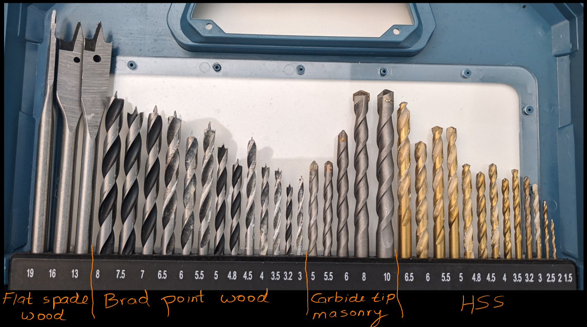

13 x HSS drill bits (1.5, 2, 2.5, 3, 3.2, 3.5, 4, 4.5, 4.8, 5, 5.5, 6 and 6.5mm) 13 x brad point wood drill bits (3, 3.2, 3.5, 4, 4.5, 4.8, 5, 5.5, 6, 6.5, 7, 7.5 and 8mm) 3 x flat spade wood drill bits (13, 16 and 19mm) countersink, 8 x nut sockets (4, 5, 6, 7, 8, 9, 10 and 13mm) 40 x 25mm driver bits (PH0, 2 x PH1, 5 x PH2, 2 x PH3, PZ0, 2 x PZ1, 5 x PZ2, 2 x PZ3, T15, T20, T25, T27, 2 x T30, T40, SL3, SL4, SL5.5, SL6.5, H2, H3, H4, H5, H6, SQ1, SQ2 and SQ3) 10x 50mm driver bits (PH1, PH2, PH3, PZ1, PZ2, PZ3, SL4, SL5, SL6.5, T20) screwdriver handle 60mm magnetic bit holder 2 x screwfinders knife 5m tape measure magnetic torpedo level.